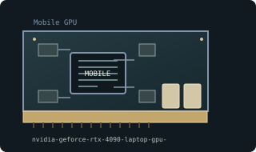

[ MOBILE GRAPHICS PROCESSORS // IDENTIFIED COMPONENT ]
NVIDIA GeForce RTX 4090 Laptop GPU 16 GB
AD103 / Ada Lovelace mobile, 2023. This entry identifies one model or reference configuration; related products and OEM variants are distinguished below.

MODEL / VARIANT: RTX 4090 Laptop GPU is not desktop RTX 4090: different GPU configuration, memory type/capacity and power envelope. Max-Q and OEM TGP vary substantially.
Recorded specifications
| Cataloged product | NVIDIA GeForce RTX 4090 Laptop GPU 16 GB |
|---|---|
| Generation / core | AD103 / Ada Lovelace mobile, 2023 |
| Core & memory | AD103 mobile configuration; 9728 CUDA cores; 16 GB GDDR6 on 256-bit bus; configurable laptop GPU power range varies by notebook implementation. |
| Host interface & I/O | Soldered BGA laptop GPU; motherboard-routed display links and power delivery; not a removable desktop PCIe card or interchangeable MXM module in most designs. |
| Variant boundary | RTX 4090 Laptop GPU is not desktop RTX 4090: different GPU configuration, memory type/capacity and power envelope. Max-Q and OEM TGP vary substantially. |
| Archival identification | Record full part number, PCB or module revision, BIOS/firmware, device/subsystem IDs, driver version, adapters, physical condition and source-document edition. |
Compatibility, service & archival notes
Mobile product name is shared with desktop flagship but underlying product and operating envelope are different.
Service only with laptop-specific board repair procedures; inspect vapor chamber/heatpipes, VRAM pads, and firmware/EC pairing. Record actual TGP and OEM driver; avoid cross-flashing system BIOS.
- Check signaling, slot keying, lane width, power pinout, board/module dimensions, case clearance, airflow and PSU requirements for the exact specimen.
- Use drivers supporting its device ID and target OS. Preserve original installer and firmware copies, and record their versions before changes.
- Do not energize boards with corrosion, cracks, damaged connectors, obstructed cooling or suspected shorts; document condition before bench testing.
Manufacturer, model & standards sources
- NVIDIA RTX 40-series Laptop GPU product overviewModel/product-history reference; compare the exact card revision and nameplate.
- NVIDIA product/legacy driver documentationManufacturer or archived product/driver documentation; exact OEM board details may differ.
- PCI Express interface standardHost interface reference; confirm exact physical and electrical compatibility.
Reference specifications do not supersede the board vendor's manual or nameplate. Performance figures are vendor claims unless explicitly identified as measured.